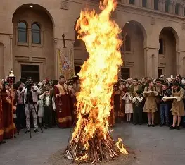
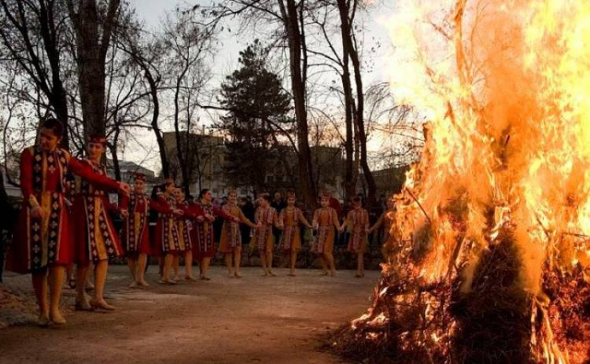
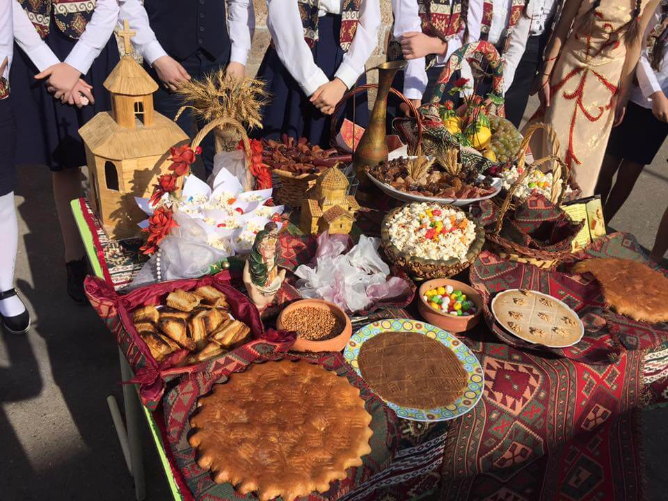
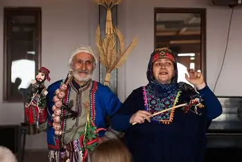

Տյառնընդառաջ՝ ձմռան հրաժեշտն ու լույսի զարթոնքը
Տրնդեզը կամ Տյառնընդառաջը հայկական ամենասիրված ծիսական տոներից է, որի արմատները հասնում են մինչև հնագույն հեթանոսական ժամանակներ։ Այն սկզբնապես կապված է եղել կրակի, ջերմության, արևի և լույսի աստված **Միհրի** պաշտամունքի հետ։ Տոնի հիմնական գաղափարը ձմռան ցրտի դեմ կրակի հաղթանակն է, բնության զարթոնքի արագացումն ու կյանքի հարատևությունը։
Քրիստոնեության ընդունումից հետո տոնը կապվեց 40-օրյա Մանուկ Հիսուսին տաճար տանելու և Աստծուն ընդառաջ գնալու գաղափարի հետ, որտեղից էլ առաջացել է եկեղեցական անունը՝ *Տյառնընդառաջ* (Տիրոջն ընդառաջ): Սակայն ժողովրդի մեջ այն պահպանեց իր ավանդական անունը՝ Տրնդեզ, որը հին հայերենում նշանակում է «Տերն ընդ ձեզ» կամ կապվում է «Տիրոջ դեզ» (կրակի դեզ) արմատի հետ։
Տոնի գլխավոր խորհրդանիշը եկեղեցու բակից բերված կրակով վառվող խարույկն է։ Կրակի վրայով թռչում են նորապսակները՝ մաքրվելու, երիտասարդները՝ հաջողության, և ամուլ կանայք՝ զավակ ունենալու ակնկալիքով։ Երբ կրակը հանդարտվում էր, մոխիրը հավաքում և շաղ էին տալիս արտերում ու տանիքներին՝ առատության համար։
Տրնդեզի ավանդական ուտեստը **աղանձն** է՝ բոված ցորենի, կանեփի, չամիչի, ընկույզի և սիսեռի խառնուրդը։ Տան մեծերը աղանձը շաղ էին տալիս խարույկի շուրջը՝ որպես զոհաբերություն բնության ուժերին, ապա բաժանում հյուրերին ու հարևաններին՝ տան օրհնությունն ու առատությունը տարածելու համար։
Տոնը հատկապես նվիրված է նորապսակ զույգերին և հարսնացուներին։ Նորահարսները հագնում էին իրենց լավագույն տարազները, իսկ փեսայի ընտանիքը հատուկ նվերներով ու երգերով մեծարում էր նրանց։ Խարույկի վրայով թռչելիս նրանց հագուստի փեշի թեթև այրվելը համարվում էր հաջողության նշան։
Այս տողերը հայկական տարբեր գավառներում երիտասարդներն ու երեխաները երգելով արտասանել են խարույկը վառելու և դրա շուրջը պտտվելու ընթացքում։ Ծուխի ուղղությամբ (մխի դին) գուշակել են տարվա բերքի առատությունը, իսկ փեշը կրակին տալով՝ հմայական ձևով հեռացրել չարն ու հիվանդությունները։
Տերընդեզ դարմանը կես,
Առ հաց ու կես ելիր գեղես:
Տերընդեզ մխի դին տես՝
Մե փութ ցանես, հազար քաղես:
Տրընդեզ փեշդ վառե,
Որ ազատվես օձե չարե:
Տերընդեզ մխի դին տես՝
Մե փութ ցանես, հազար քաղես:



